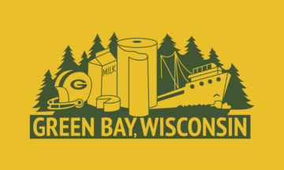

Green Bay, Wisconsin

Green Bay is the third-largest city in Wisconsin.
It is located at the mouth of the Fox River, which flows into Green Bay, a part of Lake Michigan.
Green Bay is famously home to the incredibly popular NFL Team, the Green Bay Packers.
The city has many outdoor recreational activities to partake in, as well as cultural events
(greenbaywi.gov)
City Info
Population: 106,000
Incorporated: 1854
Classification: Urban
Region: Northeast
Average Income: 34k (State Avg: 58k)

Activities
Bay Beach
City Deck
Botanical Garden
Sports

GB Packers